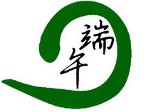
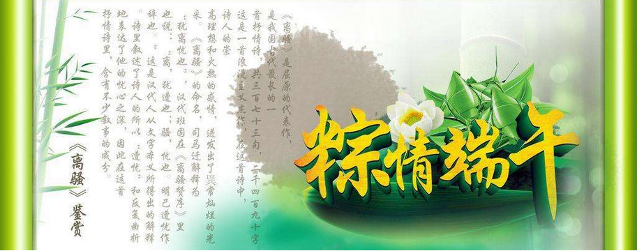
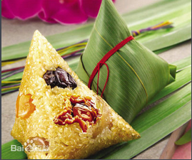
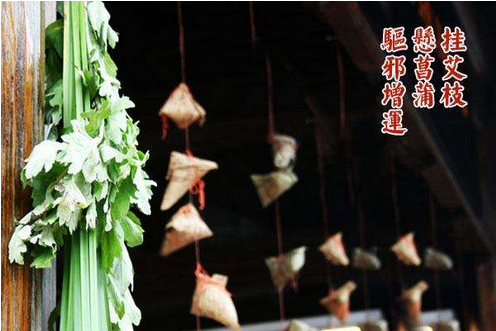
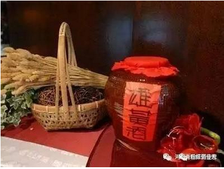
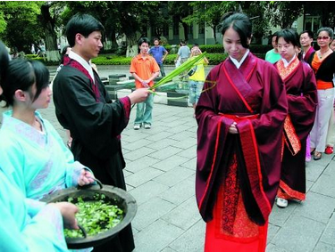
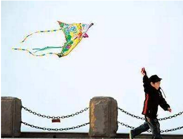
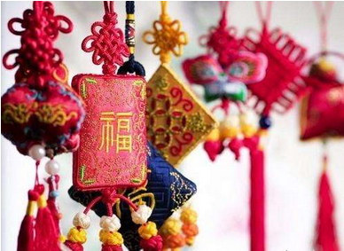
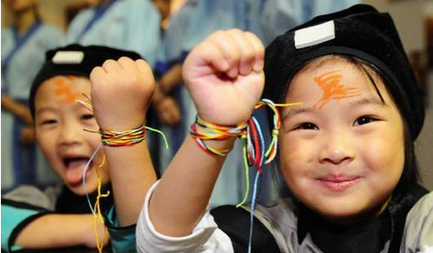
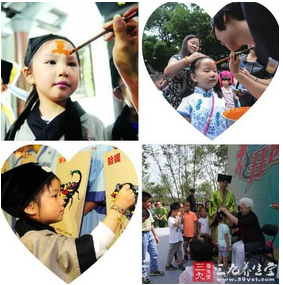

首页
起源考证
民间习俗
文学记述
传承发展

端午节的多个名称
端午节
“端”字有“初始”的意思，因此“端五”就是“初五”。而按照历法五月正是“午”月……>>>>
端阳节
“据《荆楚岁时记》记载，因仲夏登高，顺阳在上，五月正是仲夏，它的第一个午日……>>>>
重午节
“午”，属十二地支，农历五月为午月，五、午同音，五、五相重，故端午节又名“重午节”或“重五节”……>>>>
龙舟节
“赛龙舟是端午节的一项重要活动，在中国南方十分流行，尤其是广东地区，广东地区称之为扒龙船……>>>>
当五汛
“在上海部分农村，靠杭州湾北岸一带区域，如奉贤、南汇等地区，习惯上称“端五节”为“当五汛”……>>>>
天中节
“此名称根据阴阳术数而来。明代田汝成《西湖游览志余·卷二十·熙朝乐事》：“端午为天中节……>>>>
目录
01
节日名称
02
起源考证
考古传说
纪念说质疑
03
后世附会
任务纪念
相关传说
04
民间习俗
民俗活动
特色饮食
各地习俗
05
继承发展
06
文学转述

端午食粽
扒龙船

挂艾草与菖蒲

饮蒲酒、雄黄酒、朱砂酒

沐兰汤

放殃

佩豆娘

拴五色丝线

画额